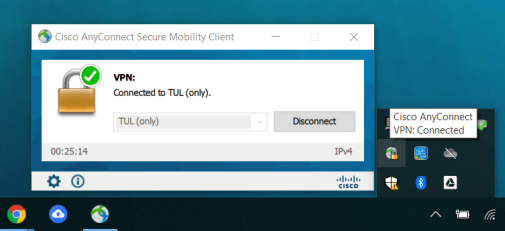

Jak se připojím k VPN?
VPN (Virtual Private Network) je způsob připojení k internetu, který vám umožní přístup k stránkám dostupných pouze v síti TUL i z domova. Pro použití VPN je potřeba nainstalovat program, který takové připojení umožní. Na stránce TUL VPN se vám objeví přihlašovací formulář s možností výběru skupiny TUL nebo TUL_only (podrobnosti najdete zde) a místy pro vyplnění přihlašovacího jména ve formátu jmeno.prijmeni@tul.cz a hesla pro vzdálený přístup.
Po ověření údajů se otevře rozhraní pro stažení programu s jednotlivými kroky.
Stiskněte tlačítko Download for Windows a zahájí se stahování programu Cisco AnyConnect VPN. Tlačítko Instructions vám ukáže instalační postup s obrázky. Úspěch instalace můžeme ověřit ikonou globusu v panelu nástrojů v pravém dolním rohu obrazovky.
Pro připojení k VPN stiskněte tuto ikonu. Otevře se vám okno, do kterého zadáte adresu, ke které se chcete připojit. V tomto případě to bude vpn.tul.cz. Pokračujte stisknutím tlačítka Connect.
Do nově otevřeného okna zadejte stejné přihlašovací údaje jako dříve a stiskněte tlačítko OK.
Poté se automaticky připojíte k VPN síti a ikona globusu se změní. Pro odpojení stiskněte tlačítko Disconnect.
